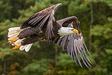
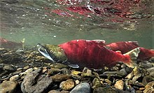
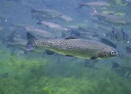

The bald eagle (Haliaeetus leucocephalus), is a sea eagle that is native to North America. As a bird of prey, they mainly eat fish that they have caught by swooping down and snatching a fish on the surface of the water. Bald eagles get their name from their white head that contrasts with their brown body. Bald eagles can be found all over North America, but are most densely populated on the Northern coast of the United States. Bald eagles will live anywhere that is close to bodies of water that have an abundance of fish. Like roadrunners, bald eagles mate for life and raise two chicks a year.

The Sockeye salmon (Oncorhynchus nerka), also called sockeye, is a salmon found in the Northern Pacific Ocean, as well as some landlocked lakes and rivers in North America. The sockeyes are special because they are one of the few species of fish that are born in freshwater rivers, then migrate to the ocean only to migrate back upstream into rivers where they reproduce. Some sockeyes die after one mating cycle and some sockeye don't even migrate to the ocean.

The rainbow trout (Oncorhynchus mykiss), also known as steelhead is a species of trout native to the Pacific Ocean in North America. Like the sockeye salmon, rainbow trout are anadromous, meaning they migrate upstream to freshwater to spawn. Rainbow trout are predators and will eat almost anything they can capture. Rainbow trout are also commonly artificially propagates in fish hatcheries that are used to restock streams. They are also farmed commercially in many parts of the world.

Tip: Click on the name of an animal to go to its wikipedia page!